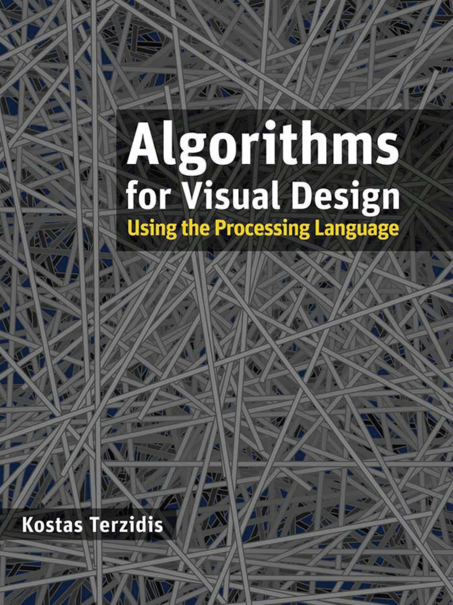

<!doctype html>
<html lang="en">
    <head>
        <meta charset="utf-8">
        <title>De la arquitectura a la programación.</title>
        <link rel="stylesheet" href="./css/reveal.css">
        <link rel="stylesheet" href="./css/theme/serif.css" id="theme">
        <link rel="stylesheet" href="./css/highlight/zenburn.css">
        <link rel="stylesheet" href="./css/print/paper.css" type="text/css" media="print">

    </head>
    <body>

        <div class="reveal">
            <div class="slides"><section  data-markdown><script type="text/template">
<!-- 1 -->
<!-- .slide: data-background="./assets/fondo01.jpg" -->

## **De arquitecta a programadora, ¡Processing al rescate!**
</script></section><section  data-markdown><script type="text/template">
<!-- 2 -->
<!-- .slide: data-background="./assets/fondo02.jpg" -->

### **O...**
### **de la potencialidad de los entornos visuales e interactivos para el aprendizaje y la creación.**
</script></section><section  data-markdown><script type="text/template">
<!-- 3 -->
<!-- .slide: data-background="./assets/espe-02.jpg" -->
</script></section><section  data-markdown><script type="text/template">
<!-- 4 -->
<!-- .slide: data-background="./assets/espe-01.jpg" -->
</script></section><section  data-markdown><script type="text/template">
<!-- 5 -->
<!-- .slide: data-background="./assets/fondo05.jpg" -->


</script></section><section  data-markdown><script type="text/template">
<!-- 6 -->
<!-- .slide: data-background="./assets/fondo06.jpg" -->

### **[Processing](https://processing.org/)**
<a href="http://reas.com/">
  
</a>
<a href="http://benfry.com/">
  
</a>
<a href="https://maedastudio.com/">
  
</a>
</script></section><section  data-markdown><script type="text/template">
<!-- 7 -->
<!-- .slide: data-background="./assets/fondo07.jpg" -->

<div style="display:inline-block;margin-left:auto;margin-right:auto;width:400px;height:400px">
  <iframe style="width:100%;height:100%;" src="https://mi-mina.github.io/2017-ex-processing/paint/index.html"></iframe>
</div>
<div style="display:inline-block;margin-left:auto;margin-right:auto;width:400px;height:400px">
  
</div>
</script></section><section  data-markdown><script type="text/template">
<!-- 8 -->
<!-- .slide: data-background="./assets/fondo08.jpg" -->

<div style="position:relative;height:0;padding-bottom:56.25%">
  <iframe src="https://www.openprocessing.org/" width="640" height="360" frameborder="0" style="position:absolute;width:100%;height:100%;left:0" allowfullscreen>
  </iframe>
</div>
</script></section><section  data-markdown><script type="text/template">
<!-- 9 -->
<!-- .slide: data-background="./assets/fondo06.jpg" -->

> "Processing es un software flexible para hacer bocetos y un lenguaje de programación para **aprender a programar** en el contexto de las artes visuales y la **alfabetización visual** en el ámbito de la tecnología"

</script></section><section  data-markdown><script type="text/template">
<!-- 10 -->
<!-- .slide: data-background="./assets/fondo10.jpg" -->

> **"Programar es manipular símbolos a ciegas"**

Bret Victor
</script></section><section  data-markdown><script type="text/template">
<!-- 11 -->
<!-- .slide: data-background="./assets/fondo10.jpg" -->

[Antropoloops](http://antropoloops.com/)

<iframe width="800" height="450" src="https://www.youtube.com/embed/WtSnaPZA8y4" frameborder="0" allowfullscreen></iframe>
</script></section><section  data-markdown><script type="text/template">
<!-- 11 -->
<!-- .slide: data-background="./assets/fondo10.jpg" -->
<iframe width="560" height="315" src="https://www.youtube.com/embed/nfWoxug5nyg" frameborder="0" allowfullscreen></iframe>
</script></section><section  data-markdown><script type="text/template">
<!-- # -->
<!-- .slide: data-background="./assets/fondo03.jpg" -->

**Esperanza Moreno Cruz**

**twitter**: @\_mimina\_      
**github**: @mi-mina  
**mail**: hola@mi-mina.com  

<small>https://mi-mina.github.io/2016-arquitectura-programacion</small>
</script></section></div>
        </div>

        <script src="./lib/js/head.min.js"></script>
        <script src="./js/reveal.js"></script>

        <script>
            function extend() {
              var target = {};
              for (var i = 0; i < arguments.length; i++) {
                var source = arguments[i];
                for (var key in source) {
                  if (source.hasOwnProperty(key)) {
                    target[key] = source[key];
                  }
                }
              }
              return target;
            }

            // Optional libraries used to extend on reveal.js
            var deps = [
              { src: './lib/js/classList.js', condition: function() { return !document.body.classList; } },
              { src: './plugin/markdown/marked.js', condition: function() { return !!document.querySelector('[data-markdown]'); } },
              { src: './plugin/markdown/markdown.js', condition: function() { return !!document.querySelector('[data-markdown]'); } },
              { src: './plugin/highlight/highlight.js', async: true, callback: function() { hljs.initHighlightingOnLoad(); } },
              { src: './plugin/zoom-js/zoom.js', async: true },
              { src: './plugin/notes/notes.js', async: true },
              { src: './plugin/math/math.js', async: true }
            ];

            // default options to init reveal.js
            var defaultOptions = {
              controls: true,
              progress: true,
              history: true,
              center: true,
              transition: 'default', // none/fade/slide/convex/concave/zoom
              dependencies: deps
            };

            // options from URL query string
            var queryOptions = Reveal.getQueryHash() || {};

            var options = {"progress":true,"controls":true,"transition":"none","width":960,"height":700,"margin":0,"minScale":0.2,"maxScale":2.3};
            options = extend(defaultOptions, options, queryOptions);
            Reveal.initialize(options);
        </script>
        
    </body>
</html>
